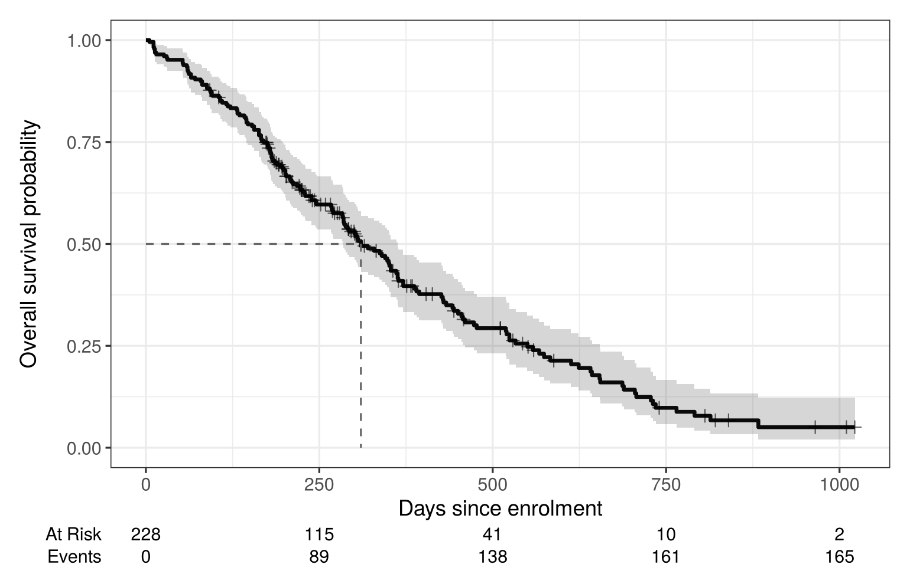
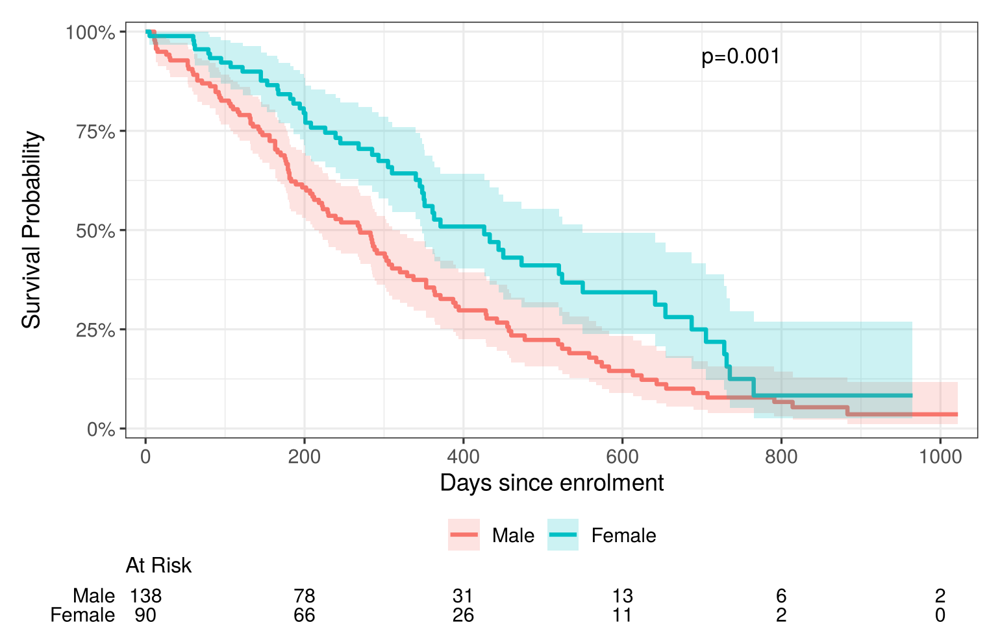
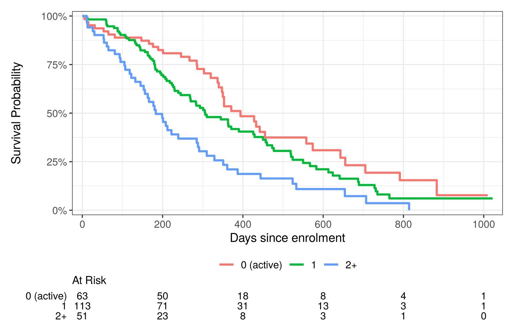

quiz([
{
"q": "A patient was still alive when the study closed, after 3 years of follow-up. How is this recorded?",
"options": [
"Event at 3 years",
"Censored at 3 years",
"Excluded from the analysis",
"Recorded as missing"
],
"answer": 1,
"why": "They were event-free for 3 years, and we don't know what happened after that: time = 3, status = 0 (censored).",
"hints": [
"No event happened, so status must be 0.",
"",
"Excluding them throws away 3 years of event-free follow-up.",
"Censored data aren't missing. They tell us the patient survived at least 3 years."
]
},
{
"q": "Which assumption about censoring do the methods in this book rely on?",
"options": [
"There is no censoring",
"Censoring is non-informative: censored patients have the same future risk as those still followed",
"Censoring only happens at the end of the study",
"Each group has the same amount of censoring"
],
"answer": 1,
"why": "Censoring can happen at any time, and groups can differ in how much there is. What matters is that censoring isn't related to a patient's risk.",
"hints": [
"Survival methods exist precisely *because* there is censoring.",
"",
"Drop-outs during the study are fine, as long as they aren't related to risk.",
"Groups can have different amounts of censoring."
]
}
])2 Kaplan–Meier curves and the log-rank test
Warm-up: remember Chapter 1?
Two quick questions to bring back the key ideas from last time.
2.1 The idea
The survival function \(S(t)\) is the probability of being event-free beyond time \(t\). Survival curves always start at \(S(0) = 1\) and can only go down.
The Kaplan–Meier (KM) estimator is named after Edward Kaplan and Paul Meier, who published it in 1958 (Kaplan and Meier 1958). Its other name, the product-limit estimator, describes how it works: the curve is the product of the chances of surviving each step. It splits follow-up into steps at each time an event happens. At each event time \(t_j\):
- \(n_j\) = number at risk just before \(t_j\). These are people who have not had the event and have not yet been censored.
- \(d_j\) = number of events at \(t_j\).
- The chance of surviving that step, given you got that far, is \(1 - d_j / n_j\).
Survival to time \(t\) is the product of all the steps so far:
\[ \hat S(t) = \prod_{t_j \le t} \left(1 - \frac{d_j}{n_j}\right) \]
Censored people count in the risk set until they are censored, and then leave quietly. They never count as an event. This is how KM uses the partial information from censored people.
2.2 Interactive app: Kaplan–Meier by hand
Type survival times separated by commas, and add + to mark a censored time. Edit the data and watch the table and curve update. Try adding a censored time before the first event, or a tie (two events at the same time).
TipCheck your understanding
- Why doesn’t the curve drop at a censored time (
+)? - After a censored observation, why are the drops at later events bigger?
- What happens to the median if the last observation is censored and \(S(t)\) never goes below 0.5?
2.3 Kaplan–Meier in R
survfit() fits the KM estimator. ~ 1 means one curve for everyone.
km_all <- survfit(Surv(time, status) ~ 1, data = lung)
km_all#> Call: survfit(formula = Surv(time, status) ~ 1, data = lung)
#>
#> n events median 0.95LCL 0.95UCL
#> [1,] 228 165 310 285 363summary() gives the estimated survival at times you choose. Here we use 180, 365 and 730 days (6 months, 1 year, 2 years):
summary(km_all, times = c(180, 365, 730))#> Call: survfit(formula = Surv(time, status) ~ 1, data = lung)
#>
#> time n.risk n.event survival std.err lower 95% CI upper 95% CI
#> 180 160 63 0.722 0.0298 0.6655 0.783
#> 365 65 58 0.409 0.0358 0.3447 0.486
#> 730 13 38 0.116 0.0283 0.0716 0.187So about 41% of patients (95% CI 34%–49%) were still alive at one year.
2.3.1 Plotting with ggsurvfit
The ggsurvfit package makes good KM plots that work with ggplot2. Use survfit2() instead of survfit(). It is identical, but it remembers the data and variable labels for plotting.
survfit2(Surv(time, status) ~ 1, data = lung) |>
ggsurvfit(linewidth = 1) +
add_confidence_interval() +
add_censor_mark(size = 2, alpha = 0.6) +
add_quantile(y_value = 0.5, linetype = "dashed", color = "grey40") +
add_risktable() +
scale_x_continuous(breaks = seq(0, 1000, 250)) +
labs(x = "Days since enrolment", y = "Overall survival probability")
The risk table under the plot shows how many patients are still being followed. Always include it. The right-hand end of a KM curve is usually based on very few people, so read it with caution.
2.4 Comparing groups
Put a grouping variable on the right-hand side of the formula:
km_sex <- survfit2(Surv(time, status) ~ sex, data = lung)
km_sex#> Call: survfit(formula = Surv(time, status) ~ sex, data = lung)
#>
#> n events median 0.95LCL 0.95UCL
#> sex=Male 138 112 270 212 310
#> sex=Female 90 53 426 348 550km_sex |>
ggsurvfit(linewidth = 1) +
add_confidence_interval() +
add_risktable(risktable_stats = "n.risk") +
add_pvalue(location = "annotation", x = 750) +
scale_ggsurvfit() +
labs(x = "Days since enrolment")
The women’s curve stays above the men’s: at every point in time, a higher proportion of women were still alive. Is that difference bigger than we’d expect by chance? Before answering that, we need one new idea.
2.4.1 A first look at the hazard
So far we’ve described survival as the proportion still alive at each time. Another way to describe it is the hazard: the risk of the event right now, for someone who has survived so far.
NoteThe hazard in plain words
Imagine 100 patients are still alive at the start of month 6, and 5 of them die during month 6. The hazard in month 6 is roughly 5 per 100 per month: the death rate among the people still at risk.
- The survival curve answers: what proportion are still alive at time t?
- The hazard answers: among those still alive, how fast are the events happening right now?
A hazard ratio (HR) compares the hazards of two groups. For example, HR = 0.6 for treatment B vs treatment A means that, at any moment, patients on B are dying at 60% of the rate of patients on A. HR = 1 means no difference.
Chapter 3 covers hazards and hazard ratios properly. For now, “hazard ≈ death rate among those still alive” is all you need.
2.4.2 The log-rank test
The log-rank test asks whether the survival curves are the same. At every time a death occurs, it compares the number of deaths in each group with the number we’d expect if both groups had the same hazard. Then it adds up the differences over all those times.
survdiff(Surv(time, status) ~ sex, data = lung)#> Call:
#> survdiff(formula = Surv(time, status) ~ sex, data = lung)
#>
#> N Observed Expected (O-E)^2/E (O-E)^2/V
#> sex=Male 138 112 91.6 4.55 10.3
#> sex=Female 90 53 73.4 5.68 10.3
#>
#> Chisq= 10.3 on 1 degrees of freedom, p= 0.001Men had 112 deaths when about 91.6 were expected. Women had 53 when about 73.4 were expected. Men died more often than expected and women less often. The test gives \(\chi^2 = 10.3\) on 1 degree of freedom, \(p = 0.001\), so there is strong evidence that survival differed by sex.
WarningWhat the log-rank test can’t do
- It gives a p-value only. It doesn’t say how big the difference is. For that we need a hazard ratio (Chapter 3).
- It works best when one group’s hazard is a constant multiple of the other’s. If the curves cross, it can miss a real difference.
- It does not adjust for other variables. In observational data, a difference in KM curves may be due to confounding (Chapters 5–7).
2.4.3 Practice: fill in the blanks
This is a live exercise: edit the code, click Run Code, and your answer is checked automatically. See Section 1.4.1 if you haven’t used one before.
Do patients aged 70 or over survive less long than younger patients? Replace each ______ with the right code, then click Run Code.
NoteHint 1
The new column is called old, so that is the grouping variable on the right of each ~.
NoteHint 2
The age cut-off is 70. Time in lung is measured in days, so one year is 365.
TipSolution
lung$old <- lung$age >= 70
fit <- survfit(Surv(time, status) ~ old, data = lung)
print(fit)
summary(fit, times = 365)
survdiff(Surv(time, status) ~ old, data = lung)Median survival was 283 days for patients aged 70 or over (old=TRUE) and 340 days for younger patients. At one year, about 30% of the older group and 45% of the younger group were still alive. The difference is just significant: log-rank \(\chi^2 = 4.0\) on 1 degree of freedom, p = 0.04.
2.5 Interactive app: two-arm study simulator
Here we simulate a two-arm study where we know the truth. The dashed lines are the true survival curves. The solid lines are the KM estimates from one simulated sample. Change the sample size and seed to see how much KM curves and log-rank p-values vary from sample to sample.
TipThings to try
For each one, predict first: decide what you expect to see, then pick the scenario and check. Committing to a prediction, even a wrong one, makes the result stick.
- Power. Predict: with only 20 patients per arm and a real effect (HR = 0.6), how often will the log-rank test give p < 0.05? Then pick Small study (20 per arm) and step through several seeds. Compare with Large study (150 per arm).
- No effect. Predict: if the treatment does nothing, can the test still give p < 0.05? Then pick No true effect (HR = 1) and step through seeds.
- Censoring. Predict: if follow-up stops at 6 months, what happens to the medians and the p-value? Then pick Short follow-up (6 months).
- The tail. Predict: with many drop-outs, which part of the curves will be most uncertain? Then pick Heavy drop-out.
2.6 Comparing more than two groups
With three or more groups, survdiff() gives an omnibus test. Its null hypothesis is that all the survival curves are the same, so a small p-value tells you that at least one group differs, but not which one.
The lung data record each patient’s ECOG performance status, a score of how well they manage daily activities (0 = fully active, higher = more impaired). Only one patient scored 3, so we combine scores of 2 and 3 into “2+”:
lung <- lung |>
mutate(ecog = factor(pmin(ph.ecog, 2), levels = 0:2,
labels = c("0 (active)", "1", "2+")))
survfit2(Surv(time, status) ~ ecog, data = lung) # medians by group#> Call: survfit(formula = Surv(time, status) ~ ecog, data = lung)
#>
#> 1 observation deleted due to missingness
#> n events median 0.95LCL 0.95UCL
#> ecog=0 (active) 63 37 394 348 574
#> ecog=1 113 82 306 268 429
#> ecog=2+ 51 45 183 153 288survfit2(Surv(time, status) ~ ecog, data = lung) |>
ggsurvfit(linewidth = 1) +
add_risktable(risktable_stats = "n.risk") +
scale_ggsurvfit() +
labs(x = "Days since enrolment")
Median survival falls from 394 days (ECOG 0) to 306 (ECOG 1) and 183 (ECOG 2+). (One patient has no ECOG score, so they are left out.) The omnibus log-rank test:
survdiff(Surv(time, status) ~ ecog, data = lung)#> Call:
#> survdiff(formula = Surv(time, status) ~ ecog, data = lung)
#>
#> n=227, 1 observation deleted due to missingness.
#>
#> N Observed Expected (O-E)^2/E (O-E)^2/V
#> ecog=0 (active) 63 37 54.2 5.4331 8.2119
#> ecog=1 113 82 83.5 0.0279 0.0573
#> ecog=2+ 51 45 26.3 13.2582 15.9641
#>
#> Chisq= 19 on 2 degrees of freedom, p= 8e-05The omnibus test is clear (\(\chi^2 = 19.0\) on 2 degrees of freedom, \(p < 0.001\)). To find out which groups differ, compare each pair of groups. With three groups there are three pairs. Running several tests raises the chance of at least one false positive above 5%, so the p-values are adjusted for multiple testing. The Holm method is a good default. pairwise_survdiff() from the survminer package does all of this:
library(survminer)
pairwise_survdiff(Surv(time, status) ~ ecog, data = lung,
p.adjust.method = "holm")#>
#> Pairwise comparisons using Log-Rank test
#>
#> data: lung and ecog
#>
#> 0 (active) 1
#> 1 0.0630 -
#> 2+ 9e-05 0.0052
#>
#> P value adjustment method: holmPatients with ECOG 2+ had worse survival than both ECOG 0 (adjusted p < 0.001) and ECOG 1 (adjusted p = 0.005). The difference between ECOG 0 and 1 is not significant after adjustment (p = 0.06).
To report how big the differences between groups are (hazard ratios), or to test for a steady trend across ordered groups like these, you need a Cox model. See Section 3.4 in the next chapter.
Good practice. Plan your comparisons before you see the data: you often don’t need every pair. (“Each dose vs placebo” is 3 comparisons for 4 groups, not 6.) Say which adjustment you used, and report survival estimates such as medians for each group, not just p-values. A methods sentence might read: “Survival was compared between ECOG groups using the log-rank test, followed by pairwise log-rank tests with Holm’s correction, using the survival (Therneau 2024) and survminer (Kassambara et al. 2021) packages in R.” The references come from citation("survival") and citation("survminer").
2.7 Reporting Kaplan–Meier results
A good KM summary normally includes:
- the plot, with a risk table and censoring marks;
- the number of events and number at risk in each group;
- median survival with a 95% CI (or “not reached”);
- survival at clinically meaningful times (e.g. 1-year survival) with CIs;
- the log-rank p-value, and an effect size such as a hazard ratio from a Cox model (Chapter 3).
2.7.1 Writing it up
A sentence template you can adapt:
Median survival was [X] days (95% CI [a] to [b]) in [group 1] and [Y] days (95% CI [c] to [d]) in [group 2]. At [time], [p1]% (95% CI …) of [group 1] and [p2]% (95% CI …) of [group 2] were still alive. Survival differed between the groups (log-rank test, \(\chi^2\) = [value], [df] df, p = [value]).
Filled in for the lung data:
Median survival was 426 days (95% CI 348 to 550) in women and 270 days (95% CI 212 to 310) in men. At one year, 53% (95% CI 42% to 66%) of women and 34% (95% CI 26% to 43%) of men were still alive. Survival differed between the sexes (log-rank test, \(\chi^2\) = 10.3, 1 df, p = 0.001).
The gtsummary package’s tbl_survfit() can produce these numbers as a table.
Quick quiz
Choose an answer to each question. You’ll get instant feedback and can change your answer as often as you like.
2.8 Exercise
2.8.1 Exercise 2.1
The veteran dataset, also in the survival package, comes from a lung cancer trial. celltype records the type of tumour: squamous, smallcell, adeno or large. Its status is already coded 0/1. The exercise has two parts, each checked separately. The packages it needs load the first time you click Run Code, so the first run takes a little longer.
Part 1: KM curves and medians
Draw KM curves by celltype, with a risk table. Then show the median survival in each group (make that the last line).
NoteHint 1
These are the same functions used for ECOG in Section 2.6: survfit2() with ~ celltype and data = veteran, then ggsurvfit() and add_risktable().
NoteHint 2
Save the fit, e.g. fit <- survfit2(...). Printing fit shows the medians.
TipSolution
fit <- survfit2(Surv(time, status) ~ celltype, data = veteran)
fit |>
ggsurvfit() +
add_risktable(risktable_stats = "n.risk") +
scale_ggsurvfit() +
labs(x = "Days")
fitMedian survival was 118 days (squamous), 51 (small cell), 51 (adeno) and 156 (large). Small cell and adeno tumours have much shorter survival.
Part 2: log-rank and pairwise tests
Carry out a log-rank test across the four cell types. How many degrees of freedom does it have, and what is its null hypothesis? Then follow it up with Holm-adjusted pairwise comparisons (make that the last line). Which cell types differ?
NoteHint 1
These are the same functions used for ECOG in Section 2.6: survdiff(), then pairwise_survdiff(). Use data = veteran and ~ celltype.
NoteHint 2
pairwise_survdiff(Surv(time, status) ~ celltype, data = veteran,
p.adjust.method = ______)
TipSolution
survdiff(Surv(time, status) ~ celltype, data = veteran)
pairwise_survdiff(Surv(time, status) ~ celltype, data = veteran,
p.adjust.method = "holm")The omnibus test has 3 degrees of freedom (4 groups − 1). Its null hypothesis is that all four curves are identical, and it is clearly rejected (\(\chi^2 = 25.4\), \(p < 0.001\)). The pairwise tests show two clusters: squamous and large cell have similar survival (adjusted p = 0.73), as do small cell and adeno (adjusted p = 0.76). Every comparison between the clusters is significant.
2.9 Summary
Answering the question. Yes. Median survival was 426 days for women and 270 days for men. One year after enrolment, about 53% of women and 34% of men were still alive. The log-rank test gave p = 0.001. How much lower women’s risk was, and whether that holds after accounting for age and fitness, is the next chapter’s question.
2.10 Further reading
All of these are free to read online unless marked otherwise. The whole book’s reading list, grouped by topic, is in Appendix C.
- Bland and Altman (1998): A one-page explanation of the Kaplan–Meier method, with a worked example.
- Bland and Altman (2004): A one-page explanation of how the log-rank test works, from the same series.
- Clark et al. (2003): The Kaplan–Meier and log-rank sections of this paper cover the same ground in more detail, including how to present results.